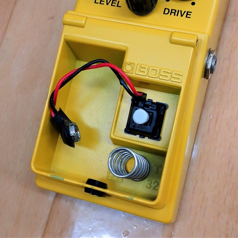

BOSSエフェクター観察メモ
2022年07月19日 カテゴリー：修理・改造・解析

BOSSコンパクトエフェクターの中身や基板（主にSMDバージョンのBD-2）を見て気になったところ等をメモしておきます。
※測定数値は正確ではありません。
【基板デザインルール関連】
- 最小配線幅：0.25mm
電源やGND、バイアス電圧は幅が太い(1mm) - 最小クリアランス：0.2mm（ほとんど一定）
- スルーホールは表側のパッドが小さい（接着剤で固定するためかも）
- ビア：穴直径0.25mm パッド直径0.7mm
【グラウンド（GND、アース）関連】
- 基板のGNDと電源・電池のマイナスは入力ジャックで接続
出力ジャックのGND配線なし
スイッチ回路部分のGNDは分けてあり、電源部分で合流
- 表裏ベタGNDあり（MXRのようなメッシュGNDではない）
- ビア間隔：5mm
【採用部品メーカー】日本のメーカーが多い
- 東芝／ローム／日清紡マイクロデバイス／旭化成エレクトロニクス／日精電機／ルビコン／エルナー／日本ケミコン／パナソニック／イサハヤ電子／アルプスアルパイン
【スイッチ関連】
- フットペダル部分に使われているスイッチは、J-M0404やJM-0404という型番のキーボード用スイッチ（接点が側面にあり、耐久性が高い）
一時期から電池スナップの配線が挟み込める仕様の特注スイッチになっている - キーボード用のCherry MX互換スイッチを一応装着可能だが、接着剤等での固定や高さ調整が必要になるので微妙かも
